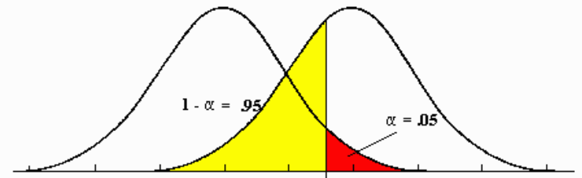
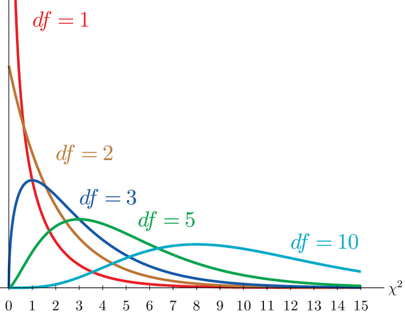

Hypothesis Test
Table of Contents
Hypothesis Test
- Null hypothesis, denoted by H0, is a claim about a population characteristic, which takes the form \[H_0:\quad\text{population characteristic = hypothesized value}\]
- Alternative hypothesis, denoted by Ha or H1, is the competing claim taking one of three forms below \[\begin{split} H_a:\quad&\text{population characteristic > hypothesized value}\\ H_a:\quad&\text{population characteristic < hypothesized value}\\ H_a:\quad&\text{population characteristic}\neq\text{hypothesized value} \end{split}\]

- Type I error: the error of rejecting H0 when H0 is true
- Type II error: the error of failing to reject H0 when H0 is false
- The probability of a Type I error, denoted by \(\alpha\), is called the level of significance of the test.
- The probability of a Type II error is denoted by \(\beta\) and The probability of not committing a Type II error is called the power of the test.
The P-value (observed significance level) is the probability of observing a test statistic as extreme as the observed sample.
Comparing Two Populations or Treatments
If the random samples are selected independently of one another, then
1. \(\mu_{\bar{x_1}-\bar{x_2}}\), the mean value of \(\bar{x_1}-\bar{x_2}\), is equal to \(\mu_{\bar{x_1}}-\mu_{\bar{x_2}}\) (i.e., \(\mu_1-\mu_2\)).
2. \(\sigma_{\bar{x_1}-\bar{x_2}}^2\), the variance of \(\bar{x_1}-\bar{x_2}\), is equal to \(\sigma_{\bar{x_1}}^2+\sigma_{\bar{x_2}}^2\) (i.e., \(\frac{\sigma_1^2}{n_1}+\frac{\sigma_2^2}{n_2}\)).
3. If \(n_1\) and \(n_2\) are both large or the population distributions are (at least approximately) normal, \(\bar{x_1}\) and \(\bar{x_2}\) each have (at least approximately) a normal distribution.
\(\chi^2-\)Distributions and Goodness-of-Fit Test

Goodness-of-Fit Test
Hypothesis: H0: π1 = proportion for Category 1
. . .
πk = proportion for Category k
Ha: H0 is not true
Test statistic:
\[ X^2 = \sum_1^k \frac{\text{(observed cell count - expected cell count)}^2}{\text{expected cell count}} \]
P-value: When H0 is true and all expected counts are at least 5,
\(X^2\) has approximately a \(\chi^2-\)distribution with df = k-1.
Email: ian.qsong@hotmail.com